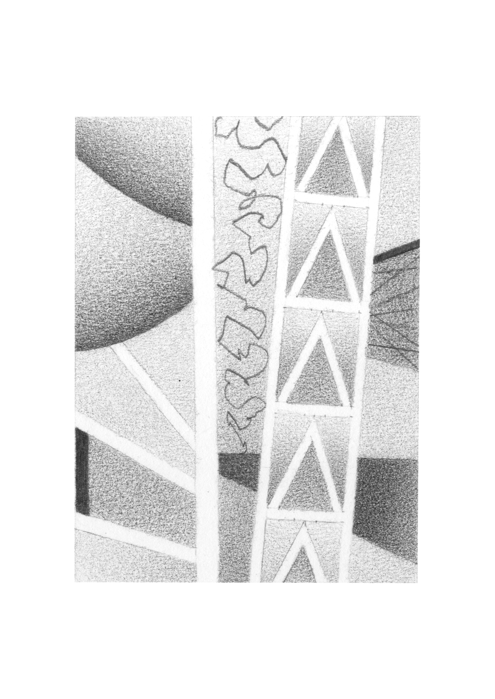
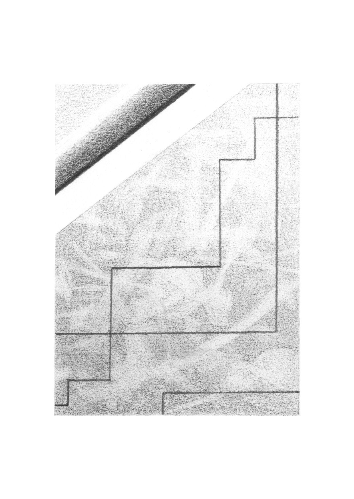
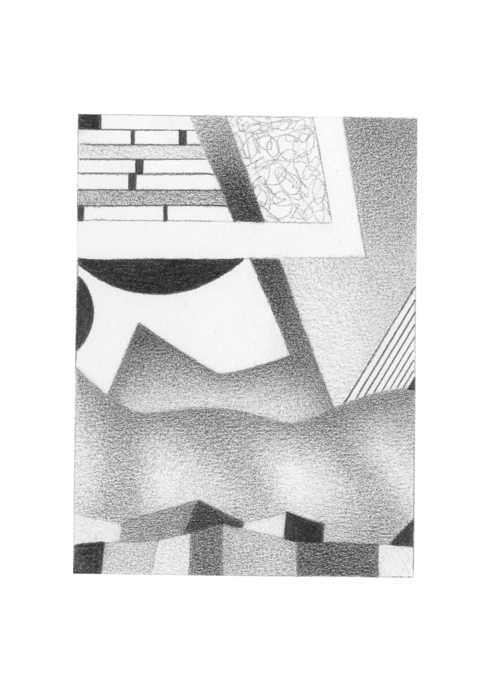
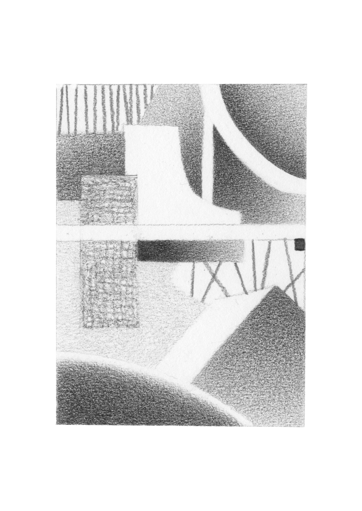
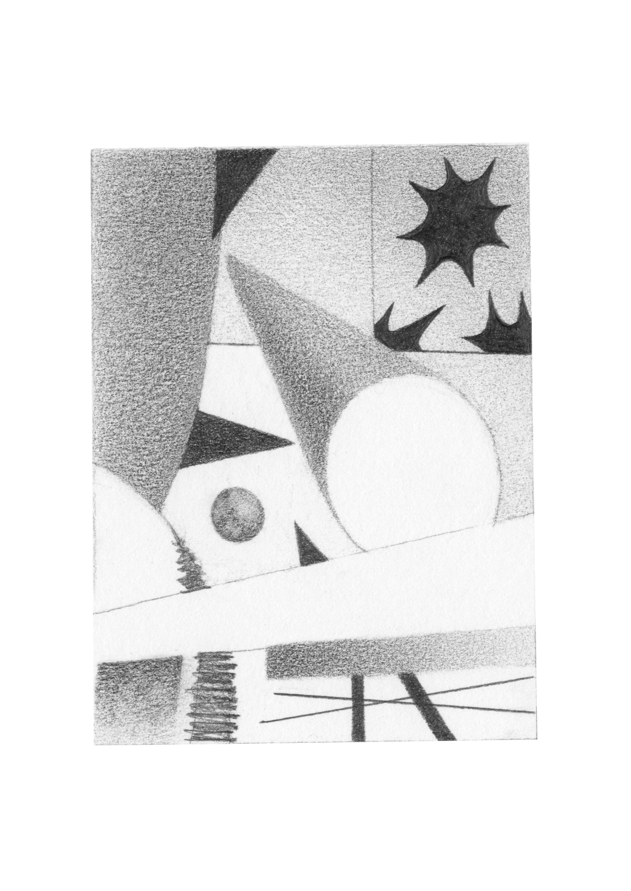
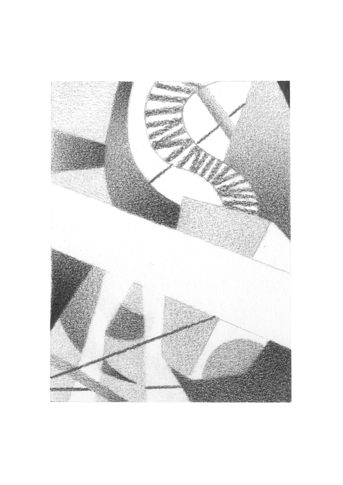
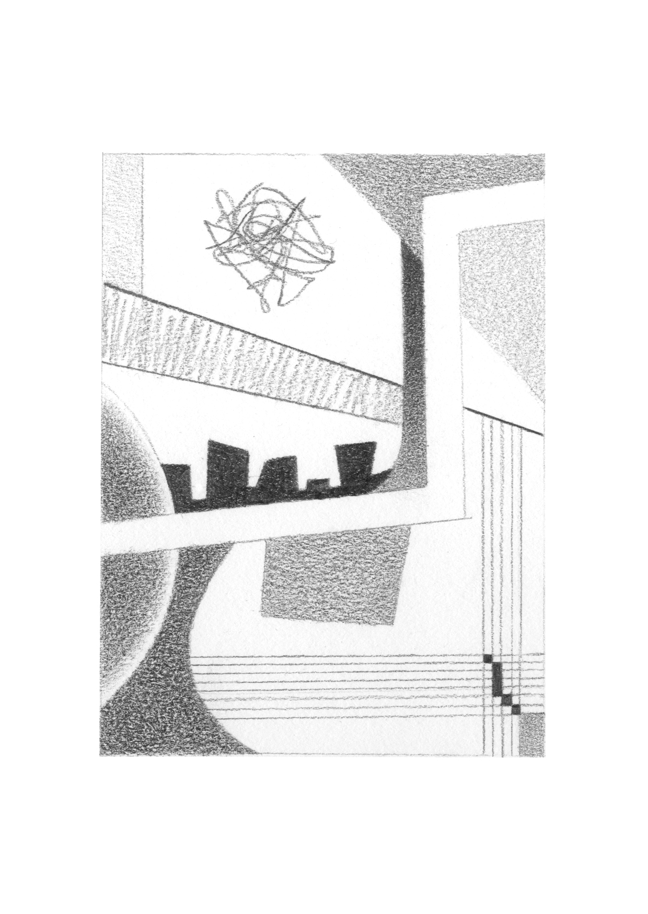
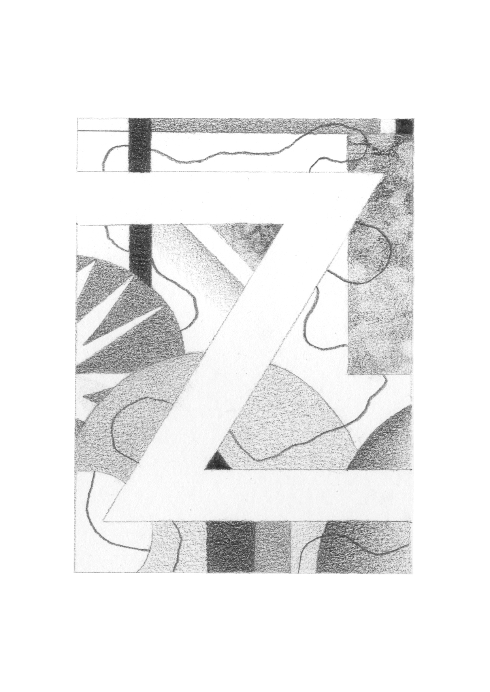
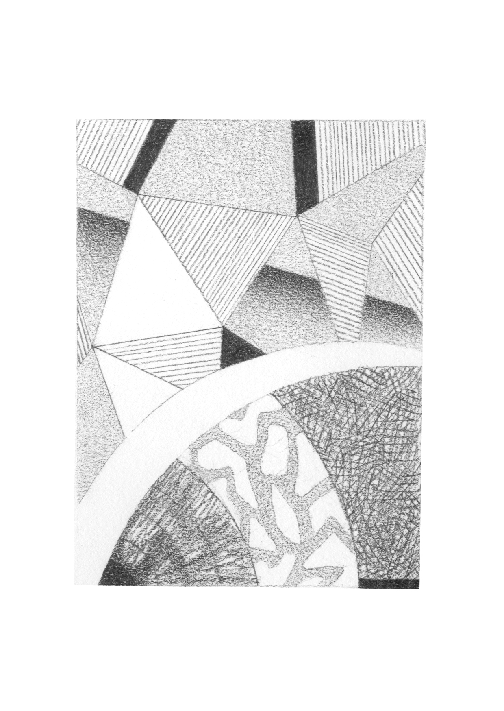
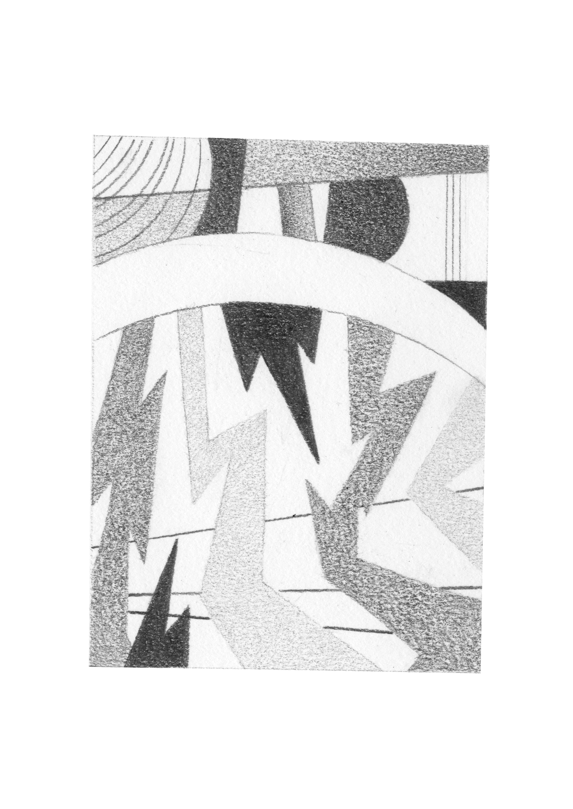
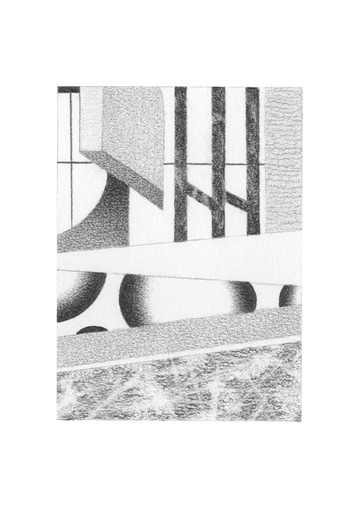
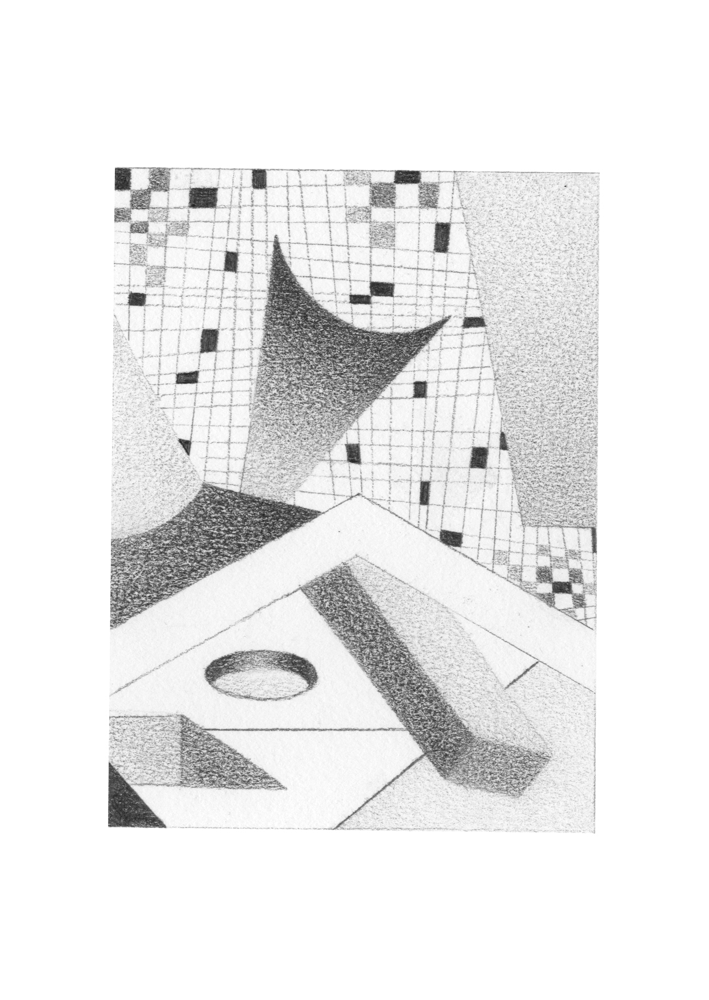
These drawings started as a way to practice creating areas of value and different textures with pencil. I made them in my spare time over 2 weeks. Altogether I spent roughly 37 hours and 45 minutes on them (on average about 3 hours 15 minutes each). I also used about 4cm of a Faber-Castell 2B pencil (about 41p worth) and 8 pieces of Daler Rowney fine grain drawing paper (£1.48). A digital zine of these drawings is available through my Kofi.